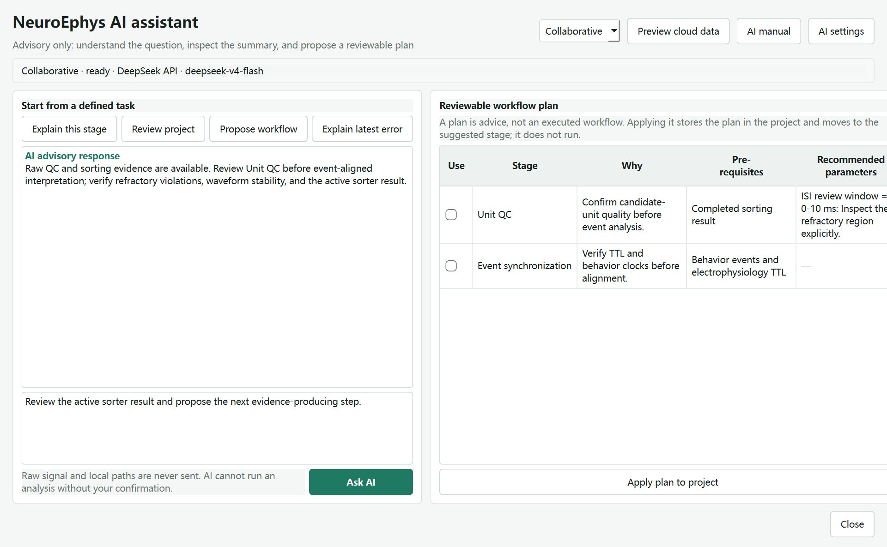

NeuroEphys AI 操作手册
受控 AI 助手
助手依据当前项目的结构化证据工作，可解释、规划并提出经本地校验的工具调用；确定性分析管线始终可独立使用。
三种工作模式
| 模式 | 权限边界 |
|---|---|
| 手动模式 | 关闭云端 AI。数据导入、质控、sorting、人工复核、统计、解码、图表导出和项目恢复均可继续使用。 |
| 助手模式 | 模型解释项目、参数、警告和候选工作流，没有执行权限。 |
| 协作模式 | 模型可提出白名单本地工具调用。NeuroEphys AI先检查前置条件和参数，再弹出确认窗口，由用户决定是否执行。 |
模型服务设置
- 在工作区右侧展开 AI 面板。
- 选择手动、助手或协作模式。
- 打开 AI 设置。首个配置入口为 DeepSeek，同时支持 OpenAI 兼容接口、实验室服务和本地兼容服务。
- 填写服务地址和模型。当前 DeepSeek 默认地址为 https://api.deepseek.com，默认模型为 deepseek-v4-flash。
- API 密钥可只保留在当前会话，或写入操作系统凭据区；项目文件不会保存密钥。
- 打开“上下文预览”，逐项检查并删除无需发送的可选字段。
- 输入问题或请求候选工作流；逐项核对节点、前置条件和参数。
设置项包含流式回复、超时、重试、取消和服务状态检测。更换模型服务不会改动项目数据与分析代码。

可用能力
- 导入后解释已识别的数据与缺失元数据。
- 把研究问题转换为可编辑工作流，节点限定在本地注册表内。
- 比较可用sorter，同时保留各工具的原生要求与输出。
- 检查重复滤波、事件缺失、无效LFP请求和数据泄漏风险。
- 阅读脱敏错误并提出恢复路径。
- 在协作模式中通过本地白名单提出预览或分析请求。
- 按观察结果、统计证据、可考虑解释、当前无法支持的结论、限制和验证建议组织图表解释。
- 根据项目中的真实证据生成Methods草稿、输出索引和审计摘要。
在线请求使用的上下文
| 信息 | 处理方式 |
|---|---|
| 原始电压与大型数组 | 保留在本机，请求构造前即排除。 |
| 本地路径与身份字段 | 从在线上下文中移除。 |
| 采集结构 | 格式、采样率、通道、时长、单位、电极、脑区、参考和在线滤波。 |
| 派生证据 | 质控指标、sorter来源、unit指标、同步残差、统计、解码和警告。 |
| 工作流状态 | 已完成、失败、跳过、待运行阶段，以及当前页面、图表、sorter和unit。 |
| 中间产物 | 仅发送标签、阶段、参数、大小、校验值和产物ID；二进制内容留在本机。 |
| API 密钥 | 仅用于授权请求头，并按用户选择写入会话或系统凭据区。 |
工具调用过程
- 模型返回结构化工具名和参数。
- 本地注册表拒绝未知工具、非法字段、缺失前提、错误顺序和不安全的数据片段。
- 确认窗口展示输入、参数、预计开销、在线发送内容和输出位置。
- 用户可以接受、修改或取消；sorting等长任务始终需要确认。
- 完成或失败的调用通过run ID和artifact ID写入项目审计历史。
科学解释格式
每次结果解释均分为观察结果、统计证据、可考虑的生物学解释、当前无法支持的结论、数据与方法限制、建议增加的验证。候选unit在人工复核前持续保留候选状态。
断网与失败处理
模型服务失败时，AI请求停止，项目保持原状，全部手动分析控件仍可使用。请检查服务地址、模型、密钥、网络、额度、超时和返回格式；失败记录不会包含密钥和原始数据。